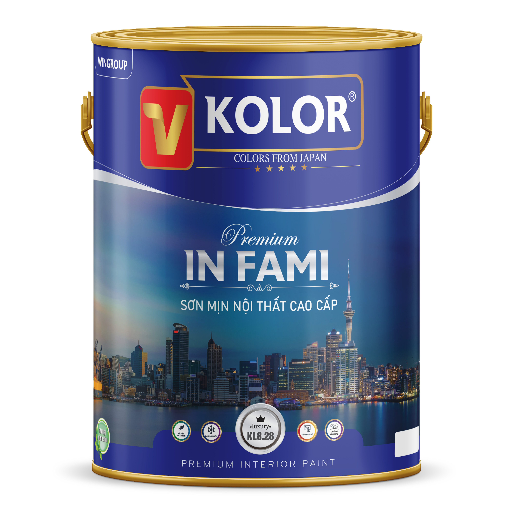
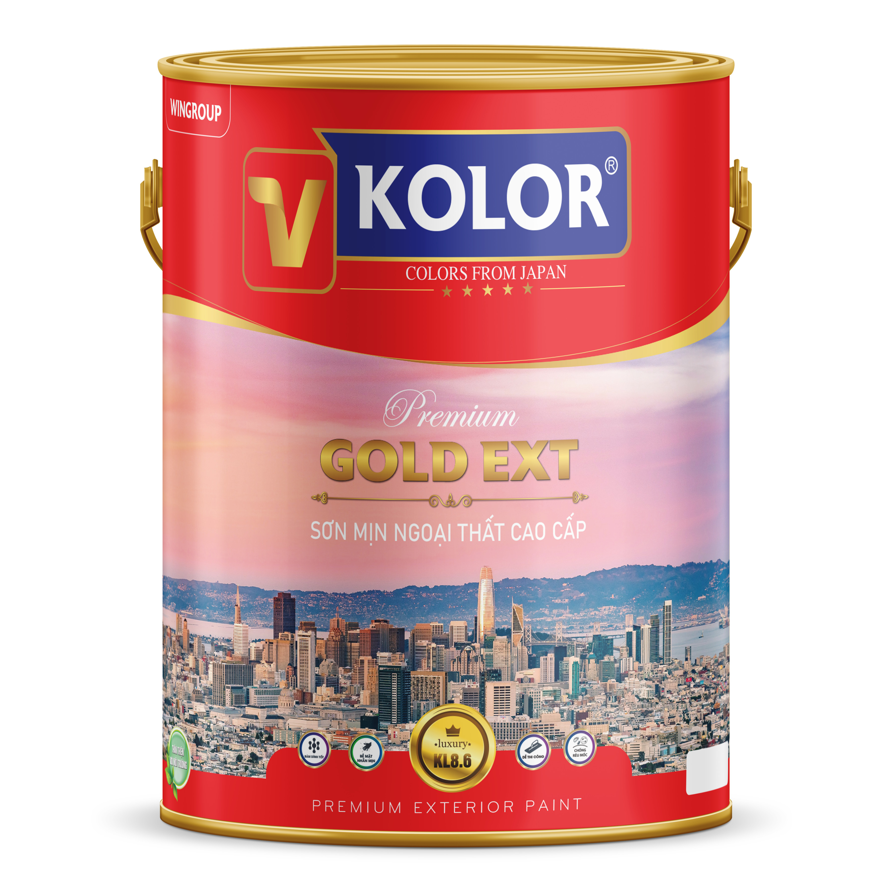
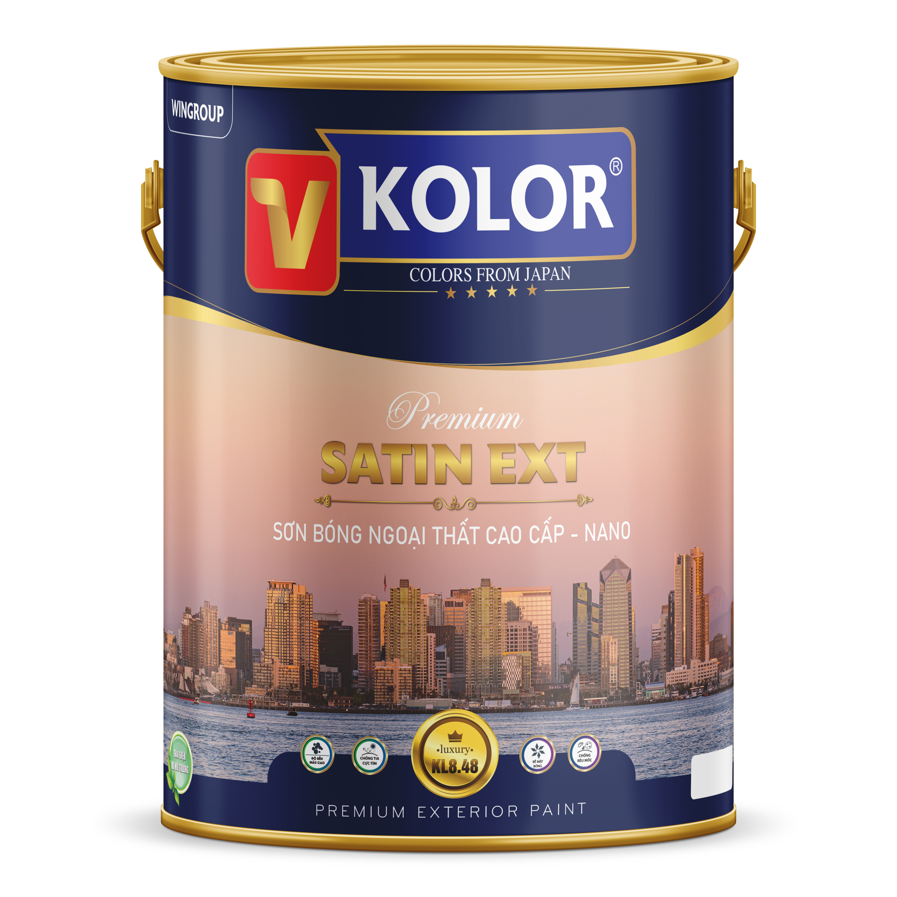

SẢN PHẨM
SƠ N VINSPEC - NANO

Sơn Vinspec Nano Nội Thất Cao Cấp
BỠmặt mịn mà ng, kháng khuẩn, lau chùi hiệu quả.
Giá: Liên hệ 0981 328 166

Sơn Vinspec Nano Ngoại Thất Bá»n Mà u
Chống thấm, chống bám bụi, mà u bá»n với thá»i tiết khắc nghiệt.
Giá: Liên hệ 0981 328 166

Sơn Lót Kháng Kiá»m Vinspec Nano
Chống kiá»m, chống mốc, tạo bá» mặt hoà n hảo cho lớp phủ.
Giá: Liên hệ 0981 328 166
SƠ N V-KOLOR

SƠ N MỊN NỘI THẤT CAO CẤP – IN FAMI
Giá: Liên hệ 0981 328 166

SƠ N NỘI THẤT CAO CẤP
Giá: Liên hệ 0981 328 166

SƠ N BÓNG NỘI THẤT CAO CẤP
Giá: Liên hệ 0981 328 166

SƠ N NỘI THẤT LAU CHÙI HIỆU QUẢ
Giá: Liên hệ 0981 328 166

SƠ N SIÊU TRẮNG TRẦN
Giá: Liên hệ 0981 328 166

SƠ N SIÊU BÓNG NỘI THẤT ĐẶC BIỆT
Giá: Liên hệ 0981 328 166

SƠ N LÓT TRONG NHÀ CAO CẤP
Giá: Liên hệ 0981 328 166

SƠ N LÓT KHÁNG KIỀM NỘI THẤT
Giá: Liên hệ 0981 328 166

SƠ N LÓT KHÁNG KIỀM NGOẠI THẤT
Giá: Liên hệ 0981 328 166

SƠ N MỊN NGOẠI THẤT CAO CẤP
Giá: Liên hệ 0981 328 166

SƠ N BÓNG NGOẠI THẤT CAO CẤP
Giá: Liên hệ 0981 328 166

SƠ N SIÊU BÓNG NGOẠI THẤT CAO CẤP
Giá: Liên hệ 0981 328 166

SƠ N CHá»NG THẤM MÀU ĐẶC BIỆT
Giá: Liên hệ 0981 328 166

SƠ N CHá»NG THẤM ĐÀN HỒI HỆ XI MĂNG
Giá: Liên hệ 0981 328 166

SƠ N PHỦ BÓNG
Giá: Liên hệ 0981 328 166